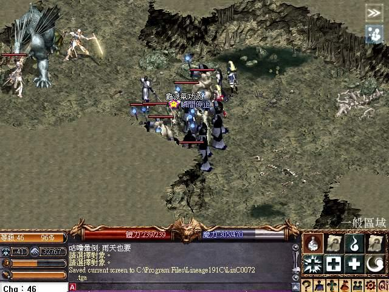
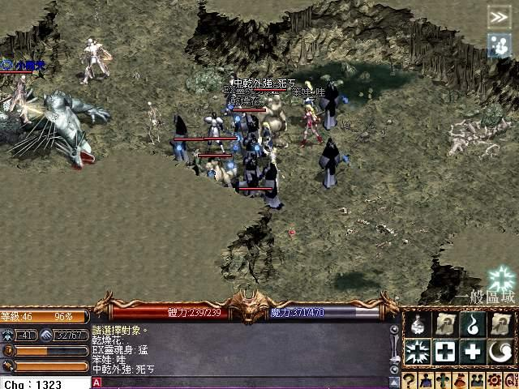
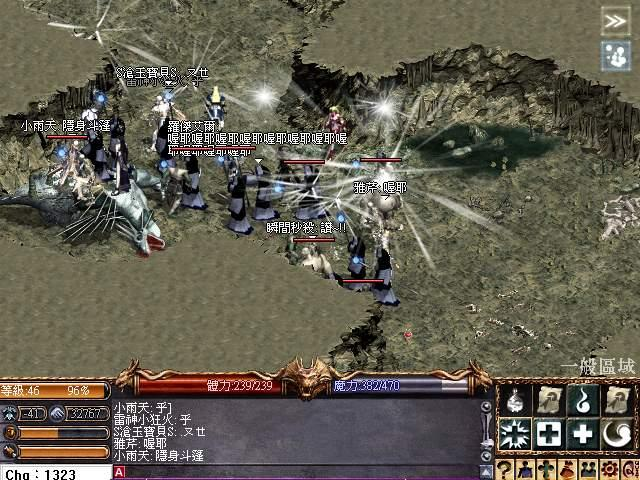

|
2002年11月22日
台灣伺服器二死騎成功擊倒水龍？
最近網路上流傳多張台灣伺服器二死騎擊倒水龍的圖片，如下：



本網覺得要偽造以上圖片是非常困難的，因此本網確信水龍曾被擊倒。水龍被擊時的版本應該冰鏡湖之後，新任務之前（即是1.91），當時的遊戲設定已經有藥水遲緩。
早前我們報導了有關12名死騎擊倒水龍的時間不足10秒的計算方法，引來多方面的迴響，大部分人都不相信死騎能夠接近水龍而又不死，或是不相信只需10秒使能擊倒死騎，其實在文末本網亦有說明"當然，在實際上最難做的是找12名不怕死的死騎、同時間一起接近水龍攻擊和保持在不死的狀態，但假如你能解決以上困難，那麼水龍將會是你的午餐！"。時間會證明一切，現在台灣飛馬伺服器終於解決了以上困難，而且只需要2名死騎（第一張圖有2死騎1卡斯特，其他的圖中卡斯特不見了，因此我們假設卡斯特飛了，圖中其中一名死騎為"小雨天"，而另一名死騎則為"雷神小狂火"），及約一小時的時間，便成功吃掉了水龍！
（網路上流傳他們擊倒水龍不同所需時間的版本，不過無論如何可見水龍的回血速度是較兩名死騎的傷害速度為慢，在此我們估計水龍的回血速度約為每秒120-160HP。大家不妨將此數據及死騎數量代入之前我們的計算中，看看理論上的速度而實際相差多遠。在考慮水龍會回血的重大因素下，假如2名死騎擊倒水龍時間需要一小時，那麼12名死騎擊倒水龍的理想時間大約為12-30秒。）
PS：經此一役後，我們相信官方會將水龍改強，而最大的可能性是增加水龍的回血量，而在現在的版本下(1.92)，龍的遠距離攻擊亦會有改變，因此在實際上所遇到障礙會更多。
韓國正式伺服器11月20日更新內容
來源：韓國天堂官方網站公告 (2)
1. 前往遺忘之島的NPC重新出現（遺忘之島在推出後第二天抽起了以修正錯誤）。
2. 攻城時間改為玩實時間四天一次，稅收減少。
3. 所有城堡都加入擬似魔法武器與鎧甲護持NPC。
4. 妖魔城堡現在會有倉庫NPC。
5. 禁止將狗隻變身做怪物。
6. 不能復活妖精森林的守護神。
7. 部分怪物會掉取道具的能力改變了。
8. 各伺服器正式實際年齡限制（15禁）。
9. 釋放元素魔法開放了，它不能用在狗隻上，使用此魔法會變紫名。
10. 歌唱之島與隱藏之谷的怪物等級降低，同時中毒的機會也減少。
11. 巨大兵蟻與巨蟻新增往變身表中。
另外Lineage Playforum亦發現一個官方沒有提及的改變，在解除隱身斗篷後需要等6秒才能做動作。
|